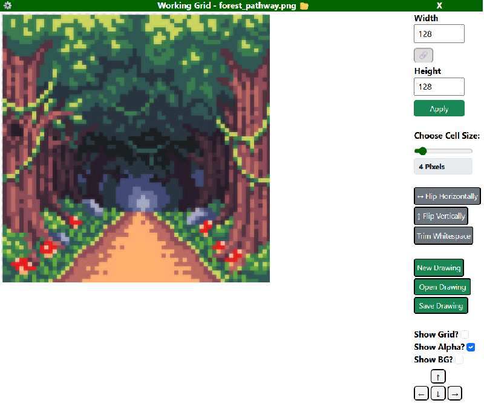

SpriteGrid
Cross-version sprite editor with custom file formats and backward compatibility.
Watch on YouTube
Visit the Webpage (Desktop/Laptop)

ⓘ
ⓘ Artwork attribution displayed above the footer.
"Forest Pathway" Image credited to
@FilthyDrawings

About This Project
Cross-version sprite editing suite supporting both legacy HexString and modern Uint32 color systems. Designed and implemented custom file formats (.gat, .gss) with forward/backward compatibility, grid resizing, and export workflows. Showcases software engineering, UI/UX design, and product versioning strategy.
Core Features
- Custom file formats (.gat, .gss, .gle, .gpt)
- Middle-mouse eyedropper tool
- Right-mouse button for clearing cells
- File saving for drawings, color palettes, and spritesheets
- PNG format support.
- Legacy format support
- Spritesheet building
Built With
- JavaScript, HTML5, CSS
- Canvas API
- Iro.js Color Picker
- Flexbox for layout
Status: v3.3.1 Complete!
Next Steps: v4.0 will be collaborated completely with my AI partner, Spruce. This time, the level editor will finally make its debut.